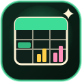

FRY SHEETSPREADSHEET
엑셀처럼 표를 만들고 계산하는 스프레드시트예요. 엑셀 파일을 열고 저장할 수 있고, 몇 가지 기능을 더했어요.
- SUM, IF, VLOOKUP 같은 함수 60여 개
- 표를 고치면 바로 바뀌는 차트, 색 단계, 데이터 막대, 체크박스
- 수식·그래프·표를 AI가 만들어 줘요. 짧고 정해진 형식이라 결과를 확인하고 바로 쓸 수 있어요
- =AI("영어로 번역", A2)처럼 쓰면 칸마다 답을 채워요. 표에 대한 질문·요약도 되지만 답이 틀릴 수 있어요
- 아이패드에서도 손가락으로 범위 선택과 채우기